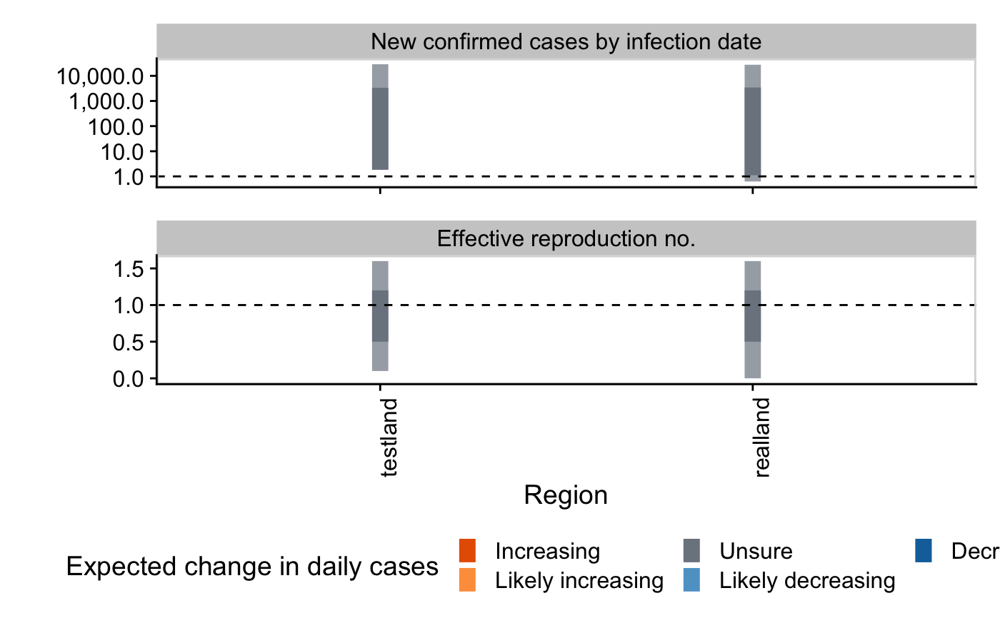
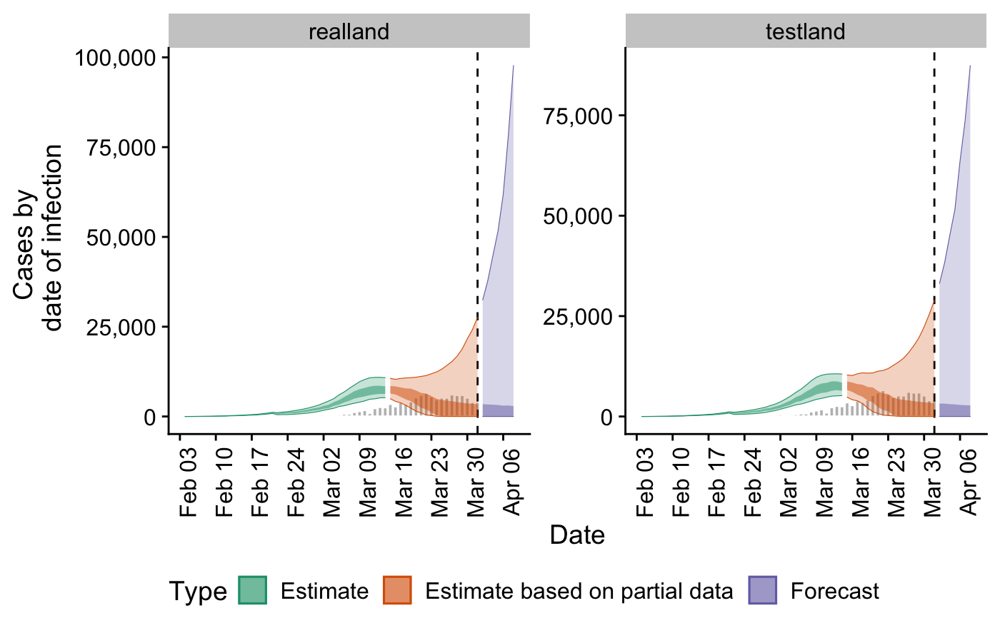
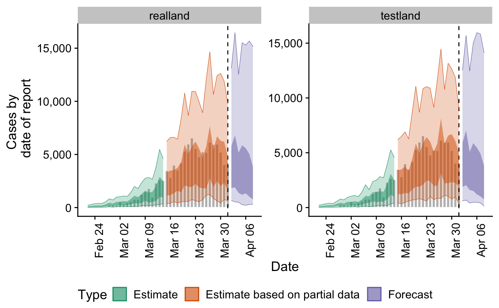
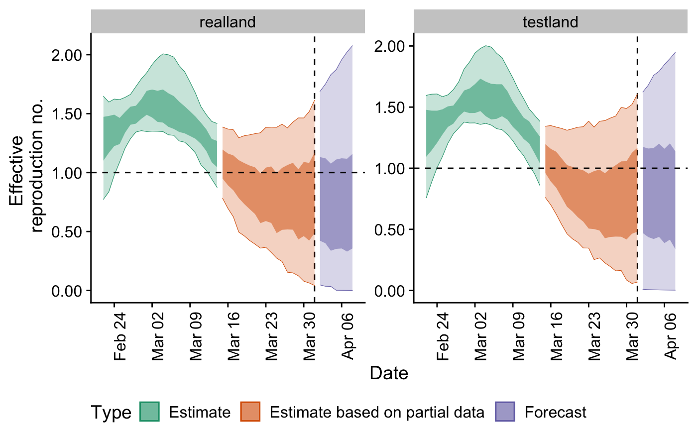

Real-time Rt Estimation, Forecasting and Reporting by Region
regional_epinow.RdEstimates Rt by region. See the documentation for epinow for further information.
regional_epinow( reported_cases, target_folder, target_date, non_zero_points = 2, cores = 1, summary = TRUE, summary_dir, region_scale = "Region", return_estimates = TRUE, ... )
Arguments
| reported_cases | A data frame of confirmed cases (confirm) by date (date), and region ( |
|---|---|
| target_folder | Character string specifying where to save results (will create if not present). |
| target_date | Date, defaults to maximum found in the data if not specified. |
| non_zero_points | Numeric, the minimum number of time points with non-zero cases in a region required for that region to be evaluated. Defaults to 2. |
| cores | Numeric, defaults to 2. The number of cores to use when fitting the stan model. |
| summary | Logical, should summary measures be calculated. |
| summary_dir | A character string giving the directory in which to store summary of results. |
| region_scale | A character string indicating the name to give the regions being summarised. |
| return_estimates | Logical, defaults to TRUE. Should estimates be returned. |
| ... | Pass additional arguments to |
Value
A list of output stratified at the top level into regional output and across region output summary output
Examples
# \donttest{ ## Construct example distributions generation_time <- list(mean = EpiNow2::covid_generation_times[1, ]$mean, mean_sd = EpiNow2::covid_generation_times[1, ]$mean_sd, sd = EpiNow2::covid_generation_times[1, ]$sd, sd_sd = EpiNow2::covid_generation_times[1, ]$sd_sd, max = 30) incubation_period <- list(mean = EpiNow2::covid_incubation_period[1, ]$mean, mean_sd = EpiNow2::covid_incubation_period[1, ]$mean_sd, sd = EpiNow2::covid_incubation_period[1, ]$sd, sd_sd = EpiNow2::covid_incubation_period[1, ]$sd_sd, max = 30) reporting_delay <- list(mean = log(10), mean_sd = log(2), sd = log(2), sd_sd = log(1.1), max = 30) ## Uses example case vector cases <- EpiNow2::example_confirmed[1:40] cases <- data.table::rbindlist(list( data.table::copy(cases)[, region := "testland"], cases[, region := "realland"])) ## Run basic nowcasting pipeline ## Here we reduce the accuracy of the GP approximation in order to reduce runtime out <- regional_epinow(reported_cases = cases, generation_time = generation_time, delays = list(incubation_period, reporting_delay), adapt_delta = 0.9, samples = 2000, warmup = 200, cores = ifelse(interactive(), 4, 1), chains = 4)#>#>#> #> SAMPLING FOR MODEL 'estimate_infections' NOW (CHAIN 1). #> Chain 1: #> Chain 1: Gradient evaluation took 0.000316 seconds #> Chain 1: 1000 transitions using 10 leapfrog steps per transition would take 3.16 seconds. #> Chain 1: Adjust your expectations accordingly! #> Chain 1: #> Chain 1: #> Chain 1: Iteration: 1 / 700 [ 0%] (Warmup) #> Chain 1: Iteration: 50 / 700 [ 7%] (Warmup) #> Chain 1: Iteration: 100 / 700 [ 14%] (Warmup) #> Chain 1: Iteration: 150 / 700 [ 21%] (Warmup) #> Chain 1: Iteration: 200 / 700 [ 28%] (Warmup) #> Chain 1: Iteration: 201 / 700 [ 28%] (Sampling) #> Chain 1: Iteration: 250 / 700 [ 35%] (Sampling) #> Chain 1: Iteration: 300 / 700 [ 42%] (Sampling) #> Chain 1: Iteration: 350 / 700 [ 50%] (Sampling) #> Chain 1: Iteration: 400 / 700 [ 57%] (Sampling) #> Chain 1: Iteration: 450 / 700 [ 64%] (Sampling) #> Chain 1: Iteration: 500 / 700 [ 71%] (Sampling) #> Chain 1: Iteration: 550 / 700 [ 78%] (Sampling) #> Chain 1: Iteration: 600 / 700 [ 85%] (Sampling) #> Chain 1: Iteration: 650 / 700 [ 92%] (Sampling) #> Chain 1: Iteration: 700 / 700 [100%] (Sampling) #> Chain 1: #> Chain 1: Elapsed Time: 44.1153 seconds (Warm-up) #> Chain 1: 56.9906 seconds (Sampling) #> Chain 1: 101.106 seconds (Total) #> Chain 1: #> #> SAMPLING FOR MODEL 'estimate_infections' NOW (CHAIN 2). #> Chain 2: #> Chain 2: Gradient evaluation took 0.000267 seconds #> Chain 2: 1000 transitions using 10 leapfrog steps per transition would take 2.67 seconds. #> Chain 2: Adjust your expectations accordingly! #> Chain 2: #> Chain 2: #> Chain 2: Iteration: 1 / 700 [ 0%] (Warmup) #> Chain 2: Iteration: 50 / 700 [ 7%] (Warmup) #> Chain 2: Iteration: 100 / 700 [ 14%] (Warmup) #> Chain 2: Iteration: 150 / 700 [ 21%] (Warmup) #> Chain 2: Iteration: 200 / 700 [ 28%] (Warmup) #> Chain 2: Iteration: 201 / 700 [ 28%] (Sampling) #> Chain 2: Iteration: 250 / 700 [ 35%] (Sampling) #> Chain 2: Iteration: 300 / 700 [ 42%] (Sampling) #> Chain 2: Iteration: 350 / 700 [ 50%] (Sampling) #> Chain 2: Iteration: 400 / 700 [ 57%] (Sampling) #> Chain 2: Iteration: 450 / 700 [ 64%] (Sampling) #> Chain 2: Iteration: 500 / 700 [ 71%] (Sampling) #> Chain 2: Iteration: 550 / 700 [ 78%] (Sampling) #> Chain 2: Iteration: 600 / 700 [ 85%] (Sampling) #> Chain 2: Iteration: 650 / 700 [ 92%] (Sampling) #> Chain 2: Iteration: 700 / 700 [100%] (Sampling) #> Chain 2: #> Chain 2: Elapsed Time: 41.5696 seconds (Warm-up) #> Chain 2: 26.6132 seconds (Sampling) #> Chain 2: 68.1828 seconds (Total) #> Chain 2: #> #> SAMPLING FOR MODEL 'estimate_infections' NOW (CHAIN 3). #> Chain 3: #> Chain 3: Gradient evaluation took 0.000302 seconds #> Chain 3: 1000 transitions using 10 leapfrog steps per transition would take 3.02 seconds. #> Chain 3: Adjust your expectations accordingly! #> Chain 3: #> Chain 3: #> Chain 3: Iteration: 1 / 700 [ 0%] (Warmup) #> Chain 3: Iteration: 50 / 700 [ 7%] (Warmup) #> Chain 3: Iteration: 100 / 700 [ 14%] (Warmup) #> Chain 3: Iteration: 150 / 700 [ 21%] (Warmup) #> Chain 3: Iteration: 200 / 700 [ 28%] (Warmup) #> Chain 3: Iteration: 201 / 700 [ 28%] (Sampling) #> Chain 3: Iteration: 250 / 700 [ 35%] (Sampling) #> Chain 3: Iteration: 300 / 700 [ 42%] (Sampling) #> Chain 3: Iteration: 350 / 700 [ 50%] (Sampling) #> Chain 3: Iteration: 400 / 700 [ 57%] (Sampling) #> Chain 3: Iteration: 450 / 700 [ 64%] (Sampling) #> Chain 3: Iteration: 500 / 700 [ 71%] (Sampling) #> Chain 3: Iteration: 550 / 700 [ 78%] (Sampling) #> Chain 3: Iteration: 600 / 700 [ 85%] (Sampling) #> Chain 3: Iteration: 650 / 700 [ 92%] (Sampling) #> Chain 3: Iteration: 700 / 700 [100%] (Sampling) #> Chain 3: #> Chain 3: Elapsed Time: 46.2613 seconds (Warm-up) #> Chain 3: 32.8992 seconds (Sampling) #> Chain 3: 79.1604 seconds (Total) #> Chain 3: #> #> SAMPLING FOR MODEL 'estimate_infections' NOW (CHAIN 4). #> Chain 4: #> Chain 4: Gradient evaluation took 0.000324 seconds #> Chain 4: 1000 transitions using 10 leapfrog steps per transition would take 3.24 seconds. #> Chain 4: Adjust your expectations accordingly! #> Chain 4: #> Chain 4: #> Chain 4: Iteration: 1 / 700 [ 0%] (Warmup) #> Chain 4: Iteration: 50 / 700 [ 7%] (Warmup) #> Chain 4: Iteration: 100 / 700 [ 14%] (Warmup) #> Chain 4: Iteration: 150 / 700 [ 21%] (Warmup) #> Chain 4: Iteration: 200 / 700 [ 28%] (Warmup) #> Chain 4: Iteration: 201 / 700 [ 28%] (Sampling) #> Chain 4: Iteration: 250 / 700 [ 35%] (Sampling) #> Chain 4: Iteration: 300 / 700 [ 42%] (Sampling) #> Chain 4: Iteration: 350 / 700 [ 50%] (Sampling) #> Chain 4: Iteration: 400 / 700 [ 57%] (Sampling) #> Chain 4: Iteration: 450 / 700 [ 64%] (Sampling) #> Chain 4: Iteration: 500 / 700 [ 71%] (Sampling) #> Chain 4: Iteration: 550 / 700 [ 78%] (Sampling) #> Chain 4: Iteration: 600 / 700 [ 85%] (Sampling) #> Chain 4: Iteration: 650 / 700 [ 92%] (Sampling) #> Chain 4: Iteration: 700 / 700 [100%] (Sampling) #> Chain 4: #> Chain 4: Elapsed Time: 46.844 seconds (Warm-up) #> Chain 4: 37.4042 seconds (Sampling) #> Chain 4: 84.2482 seconds (Total) #> Chain 4:#>#>#> Warning: There were 37 divergent transitions after warmup. See #> http://mc-stan.org/misc/warnings.html#divergent-transitions-after-warmup #> to find out why this is a problem and how to eliminate them.#> Warning: Examine the pairs() plot to diagnose sampling problems#> #> SAMPLING FOR MODEL 'estimate_infections' NOW (CHAIN 1). #> Chain 1: #> Chain 1: Gradient evaluation took 0.000336 seconds #> Chain 1: 1000 transitions using 10 leapfrog steps per transition would take 3.36 seconds. #> Chain 1: Adjust your expectations accordingly! #> Chain 1: #> Chain 1: #> Chain 1: Iteration: 1 / 700 [ 0%] (Warmup) #> Chain 1: Iteration: 50 / 700 [ 7%] (Warmup) #> Chain 1: Iteration: 100 / 700 [ 14%] (Warmup) #> Chain 1: Iteration: 150 / 700 [ 21%] (Warmup) #> Chain 1: Iteration: 200 / 700 [ 28%] (Warmup) #> Chain 1: Iteration: 201 / 700 [ 28%] (Sampling) #> Chain 1: Iteration: 250 / 700 [ 35%] (Sampling) #> Chain 1: Iteration: 300 / 700 [ 42%] (Sampling) #> Chain 1: Iteration: 350 / 700 [ 50%] (Sampling) #> Chain 1: Iteration: 400 / 700 [ 57%] (Sampling) #> Chain 1: Iteration: 450 / 700 [ 64%] (Sampling) #> Chain 1: Iteration: 500 / 700 [ 71%] (Sampling) #> Chain 1: Iteration: 550 / 700 [ 78%] (Sampling) #> Chain 1: Iteration: 600 / 700 [ 85%] (Sampling) #> Chain 1: Iteration: 650 / 700 [ 92%] (Sampling) #> Chain 1: Iteration: 700 / 700 [100%] (Sampling) #> Chain 1: #> Chain 1: Elapsed Time: 45.9486 seconds (Warm-up) #> Chain 1: 63.4707 seconds (Sampling) #> Chain 1: 109.419 seconds (Total) #> Chain 1: #> #> SAMPLING FOR MODEL 'estimate_infections' NOW (CHAIN 2). #> Chain 2: #> Chain 2: Gradient evaluation took 0.000935 seconds #> Chain 2: 1000 transitions using 10 leapfrog steps per transition would take 9.35 seconds. #> Chain 2: Adjust your expectations accordingly! #> Chain 2: #> Chain 2: #> Chain 2: Iteration: 1 / 700 [ 0%] (Warmup) #> Chain 2: Iteration: 50 / 700 [ 7%] (Warmup) #> Chain 2: Iteration: 100 / 700 [ 14%] (Warmup) #> Chain 2: Iteration: 150 / 700 [ 21%] (Warmup) #> Chain 2: Iteration: 200 / 700 [ 28%] (Warmup) #> Chain 2: Iteration: 201 / 700 [ 28%] (Sampling) #> Chain 2: Iteration: 250 / 700 [ 35%] (Sampling) #> Chain 2: Iteration: 300 / 700 [ 42%] (Sampling) #> Chain 2: Iteration: 350 / 700 [ 50%] (Sampling) #> Chain 2: Iteration: 400 / 700 [ 57%] (Sampling) #> Chain 2: Iteration: 450 / 700 [ 64%] (Sampling) #> Chain 2: Iteration: 500 / 700 [ 71%] (Sampling) #> Chain 2: Iteration: 550 / 700 [ 78%] (Sampling) #> Chain 2: Iteration: 600 / 700 [ 85%] (Sampling) #> Chain 2: Iteration: 650 / 700 [ 92%] (Sampling) #> Chain 2: Iteration: 700 / 700 [100%] (Sampling) #> Chain 2: #> Chain 2: Elapsed Time: 56.6873 seconds (Warm-up) #> Chain 2: 60.8784 seconds (Sampling) #> Chain 2: 117.566 seconds (Total) #> Chain 2: #> #> SAMPLING FOR MODEL 'estimate_infections' NOW (CHAIN 3). #> Chain 3: #> Chain 3: Gradient evaluation took 0.000934 seconds #> Chain 3: 1000 transitions using 10 leapfrog steps per transition would take 9.34 seconds. #> Chain 3: Adjust your expectations accordingly! #> Chain 3: #> Chain 3: #> Chain 3: Iteration: 1 / 700 [ 0%] (Warmup) #> Chain 3: Iteration: 50 / 700 [ 7%] (Warmup) #> Chain 3: Iteration: 100 / 700 [ 14%] (Warmup) #> Chain 3: Iteration: 150 / 700 [ 21%] (Warmup) #> Chain 3: Iteration: 200 / 700 [ 28%] (Warmup) #> Chain 3: Iteration: 201 / 700 [ 28%] (Sampling) #> Chain 3: Iteration: 250 / 700 [ 35%] (Sampling) #> Chain 3: Iteration: 300 / 700 [ 42%] (Sampling) #> Chain 3: Iteration: 350 / 700 [ 50%] (Sampling) #> Chain 3: Iteration: 400 / 700 [ 57%] (Sampling) #> Chain 3: Iteration: 450 / 700 [ 64%] (Sampling) #> Chain 3: Iteration: 500 / 700 [ 71%] (Sampling) #> Chain 3: Iteration: 550 / 700 [ 78%] (Sampling) #> Chain 3: Iteration: 600 / 700 [ 85%] (Sampling) #> Chain 3: Iteration: 650 / 700 [ 92%] (Sampling) #> Chain 3: Iteration: 700 / 700 [100%] (Sampling) #> Chain 3: #> Chain 3: Elapsed Time: 39.7813 seconds (Warm-up) #> Chain 3: 19.7747 seconds (Sampling) #> Chain 3: 59.556 seconds (Total) #> Chain 3: #> #> SAMPLING FOR MODEL 'estimate_infections' NOW (CHAIN 4). #> Chain 4: #> Chain 4: Gradient evaluation took 0.000317 seconds #> Chain 4: 1000 transitions using 10 leapfrog steps per transition would take 3.17 seconds. #> Chain 4: Adjust your expectations accordingly! #> Chain 4: #> Chain 4: #> Chain 4: Iteration: 1 / 700 [ 0%] (Warmup) #> Chain 4: Iteration: 50 / 700 [ 7%] (Warmup) #> Chain 4: Iteration: 100 / 700 [ 14%] (Warmup) #> Chain 4: Iteration: 150 / 700 [ 21%] (Warmup) #> Chain 4: Iteration: 200 / 700 [ 28%] (Warmup) #> Chain 4: Iteration: 201 / 700 [ 28%] (Sampling) #> Chain 4: Iteration: 250 / 700 [ 35%] (Sampling) #> Chain 4: Iteration: 300 / 700 [ 42%] (Sampling) #> Chain 4: Iteration: 350 / 700 [ 50%] (Sampling) #> Chain 4: Iteration: 400 / 700 [ 57%] (Sampling) #> Chain 4: Iteration: 450 / 700 [ 64%] (Sampling) #> Chain 4: Iteration: 500 / 700 [ 71%] (Sampling) #> Chain 4: Iteration: 550 / 700 [ 78%] (Sampling) #> Chain 4: Iteration: 600 / 700 [ 85%] (Sampling) #> Chain 4: Iteration: 650 / 700 [ 92%] (Sampling) #> Chain 4: Iteration: 700 / 700 [100%] (Sampling) #> Chain 4: #> Chain 4: Elapsed Time: 37.1398 seconds (Warm-up) #> Chain 4: 21.4763 seconds (Sampling) #> Chain 4: 58.6161 seconds (Total) #> Chain 4:#>#>#> Warning: There were 75 divergent transitions after warmup. See #> http://mc-stan.org/misc/warnings.html#divergent-transitions-after-warmup #> to find out why this is a problem and how to eliminate them.#> Warning: Examine the pairs() plot to diagnose sampling problems#>#> $result #> $result$latest_date #> [1] "2020-04-08" #> #> $result$results #> $result$results$estimates #> $result$results$estimates$samples #> region variable parameter time date sample #> 1: testland infections infections 1 2020-02-04 1 #> 2: testland infections infections 2 2020-02-05 1 #> 3: testland infections infections 3 2020-02-06 1 #> 4: testland infections infections 4 2020-02-07 1 #> 5: testland infections infections 5 2020-02-08 1 #> --- #> 876126: realland prior_infections prior_infections 61 2020-04-04 1 #> 876127: realland prior_infections prior_infections 62 2020-04-05 1 #> 876128: realland prior_infections prior_infections 63 2020-04-06 1 #> 876129: realland prior_infections prior_infections 64 2020-04-07 1 #> 876130: realland prior_infections prior_infections 65 2020-04-08 1 #> value strat type #> 1: 1.991969 <NA> estimate #> 2: 11.044769 <NA> estimate #> 3: 16.345720 <NA> estimate #> 4: 31.214512 <NA> estimate #> 5: 44.816814 <NA> estimate #> --- #> 876126: 4386.111642 <NA> forecast #> 876127: 4343.204878 <NA> forecast #> 876128: 4300.717845 <NA> forecast #> 876129: 4258.646439 <NA> forecast #> 876130: 4216.986592 <NA> forecast #> #> $result$results$estimates$summarised #> region date variable strat type bottom top #> 1: testland 2020-02-22 R <NA> estimate 0.7576517 1.596253 #> 2: testland 2020-02-23 R <NA> estimate 0.8859090 1.605936 #> 3: testland 2020-02-24 R <NA> estimate 1.0046777 1.607299 #> 4: testland 2020-02-25 R <NA> estimate 1.0962461 1.585228 #> 5: testland 2020-02-26 R <NA> estimate 1.2039098 1.600397 #> --- #> 564: realland 2020-04-04 reported_cases <NA> forecast 498.0000000 12529.000000 #> 565: realland 2020-04-05 reported_cases <NA> forecast 267.0000000 15524.000000 #> 566: realland 2020-04-06 reported_cases <NA> forecast 219.0000000 15293.000000 #> 567: realland 2020-04-07 reported_cases <NA> forecast 282.0000000 15679.000000 #> 568: realland 2020-04-08 reported_cases <NA> forecast 324.0000000 15162.000000 #> lower upper median mean sd #> 1: 1.093831 1.477795 1.213907 1.203472 2.657974e-01 #> 2: 1.146713 1.471122 1.257818 1.246377 2.273974e-01 #> 3: 1.207542 1.470754 1.305029 1.295847 1.891385e-01 #> 4: 1.275773 1.481923 1.361105 1.350662 1.533180e-01 #> 5: 1.337780 1.506213 1.414437 1.409068 1.249995e-01 #> --- #> 564: 1382.000000 5156.000000 4508.500000 6205.903000 6.351723e+03 #> 565: 1204.000000 5856.000000 5524.000000 8002.762500 1.122437e+04 #> 566: 1341.000000 5589.000000 5075.500000 10682.214500 1.199807e+05 #> 567: 1026.000000 5044.000000 4529.000000 15050.205500 2.326602e+05 #> 568: 758.000000 3862.000000 3577.500000 15131.721000 1.645033e+05 #> #> #> #> $result$summarised_results #> $result$summarised_results$table #> Region New confirmed cases by infection date #> 1: realland 3426 (1 -- 27651) #> 2: testland 3309 (2 -- 28898) #> Expected change in daily cases Effective reproduction no. #> 1: Unsure 0.9 (0 -- 1.6) #> 2: Unsure 0.8 (0.1 -- 1.6) #> Rate of growth Doubling/halving time (days) #> 1: -0.04 (-0.29 -- 0.19) -16.4 (3.7 -- -2.4) #> 2: -0.04 (-0.27 -- 0.2) -15.4 (3.5 -- -2.6) #> #> $result$summarised_results$data #> region lower upper mid_lower mid_upper #> 1: testland 1.8363003 28898.40 1.836300 3316.391 #> 2: realland 0.6262416 27651.47 1.115566 3429.495 #> 3: realland 0.0000000 1.60 0.500000 1.200 #> 4: testland 0.1000000 1.60 0.500000 1.200 #> metric Expected change in daily cases #> 1: New confirmed cases by infection date Unsure #> 2: New confirmed cases by infection date Unsure #> 3: Effective reproduction no. Unsure #> 4: Effective reproduction no. Unsure #> #> $result$summarised_results$regions_by_inc #> [1] "testland" "realland" #> #> #> $result$summary_plot#> Warning: Transformation introduced infinite values in continuous y-axis#> #> $result$summarised_measures #> $result$summarised_measures$rt #> region date type median lower_90 upper_90 #> 1: testland 2020-02-22 estimate 1.2 0.8 1.6 #> 2: testland 2020-02-23 estimate 1.3 0.9 1.6 #> 3: testland 2020-02-24 estimate 1.3 1.0 1.6 #> 4: testland 2020-02-25 estimate 1.4 1.1 1.6 #> 5: testland 2020-02-26 estimate 1.4 1.2 1.6 #> 6: testland 2020-02-27 estimate 1.5 1.3 1.6 #> 7: testland 2020-02-28 estimate 1.5 1.3 1.7 #> 8: testland 2020-02-29 estimate 1.6 1.4 1.8 #> 9: testland 2020-03-01 estimate 1.6 1.4 1.9 #> 10: testland 2020-03-02 estimate 1.6 1.4 1.9 #> 11: testland 2020-03-03 estimate 1.7 1.4 2.0 #> 12: testland 2020-03-04 estimate 1.7 1.4 2.0 #> 13: testland 2020-03-05 estimate 1.6 1.4 2.0 #> 14: testland 2020-03-06 estimate 1.6 1.3 1.9 #> 15: testland 2020-03-07 estimate 1.6 1.3 1.9 #> 16: testland 2020-03-08 estimate 1.5 1.3 1.8 #> 17: testland 2020-03-09 estimate 1.5 1.2 1.7 #> 18: testland 2020-03-10 estimate 1.4 1.2 1.6 #> 19: testland 2020-03-11 estimate 1.3 1.1 1.6 #> 20: testland 2020-03-12 estimate 1.3 1.0 1.5 #> 21: testland 2020-03-13 estimate 1.2 1.0 1.4 #> 22: testland 2020-03-14 estimate 1.1 0.9 1.4 #> 23: testland 2020-03-15 estimate based on partial data 1.1 0.8 1.3 #> 24: testland 2020-03-16 estimate based on partial data 1.0 0.7 1.3 #> 25: testland 2020-03-17 estimate based on partial data 1.0 0.6 1.3 #> 26: testland 2020-03-18 estimate based on partial data 0.9 0.5 1.3 #> 27: testland 2020-03-19 estimate based on partial data 0.9 0.5 1.3 #> 28: testland 2020-03-20 estimate based on partial data 0.9 0.4 1.3 #> 29: testland 2020-03-21 estimate based on partial data 0.8 0.4 1.3 #> 30: testland 2020-03-22 estimate based on partial data 0.8 0.3 1.3 #> 31: testland 2020-03-23 estimate based on partial data 0.8 0.3 1.4 #> 32: testland 2020-03-24 estimate based on partial data 0.8 0.3 1.3 #> 33: testland 2020-03-25 estimate based on partial data 0.8 0.3 1.4 #> 34: testland 2020-03-26 estimate based on partial data 0.8 0.2 1.4 #> 35: testland 2020-03-27 estimate based on partial data 0.8 0.2 1.4 #> 36: testland 2020-03-28 estimate based on partial data 0.8 0.2 1.4 #> 37: testland 2020-03-29 estimate based on partial data 0.8 0.2 1.5 #> 38: testland 2020-03-30 estimate based on partial data 0.8 0.1 1.5 #> 39: testland 2020-03-31 estimate based on partial data 0.8 0.1 1.5 #> 40: testland 2020-04-01 estimate based on partial data 0.8 0.1 1.6 #> 41: testland 2020-04-02 forecast 0.9 0.0 1.6 #> 42: testland 2020-04-03 forecast 0.9 0.0 1.7 #> 43: testland 2020-04-04 forecast 0.9 0.0 1.8 #> 44: testland 2020-04-05 forecast 0.9 0.0 1.8 #> 45: testland 2020-04-06 forecast 0.9 0.0 1.8 #> 46: testland 2020-04-07 forecast 0.9 0.0 1.9 #> 47: testland 2020-04-08 forecast 0.9 0.0 1.9 #> 48: realland 2020-02-22 estimate 1.2 0.8 1.6 #> 49: realland 2020-02-23 estimate 1.3 0.8 1.6 #> 50: realland 2020-02-24 estimate 1.3 1.0 1.6 #> 51: realland 2020-02-25 estimate 1.4 1.1 1.6 #> 52: realland 2020-02-26 estimate 1.4 1.2 1.6 #> 53: realland 2020-02-27 estimate 1.5 1.3 1.7 #> 54: realland 2020-02-28 estimate 1.5 1.3 1.7 #> 55: realland 2020-02-29 estimate 1.6 1.4 1.8 #> 56: realland 2020-03-01 estimate 1.6 1.3 1.8 #> 57: realland 2020-03-02 estimate 1.6 1.4 1.9 #> 58: realland 2020-03-03 estimate 1.6 1.4 2.0 #> 59: realland 2020-03-04 estimate 1.6 1.3 2.0 #> 60: realland 2020-03-05 estimate 1.6 1.3 2.0 #> 61: realland 2020-03-06 estimate 1.6 1.3 2.0 #> 62: realland 2020-03-07 estimate 1.6 1.3 1.9 #> 63: realland 2020-03-08 estimate 1.5 1.3 1.9 #> 64: realland 2020-03-09 estimate 1.5 1.2 1.8 #> 65: realland 2020-03-10 estimate 1.4 1.2 1.7 #> 66: realland 2020-03-11 estimate 1.3 1.1 1.6 #> 67: realland 2020-03-12 estimate 1.3 1.0 1.5 #> 68: realland 2020-03-13 estimate 1.2 0.9 1.4 #> 69: realland 2020-03-14 estimate 1.1 0.9 1.4 #> 70: realland 2020-03-15 estimate based on partial data 1.1 0.8 1.4 #> 71: realland 2020-03-16 estimate based on partial data 1.0 0.7 1.4 #> 72: realland 2020-03-17 estimate based on partial data 1.0 0.6 1.4 #> 73: realland 2020-03-18 estimate based on partial data 0.9 0.5 1.3 #> 74: realland 2020-03-19 estimate based on partial data 0.9 0.5 1.3 #> 75: realland 2020-03-20 estimate based on partial data 0.9 0.4 1.3 #> 76: realland 2020-03-21 estimate based on partial data 0.8 0.4 1.3 #> 77: realland 2020-03-22 estimate based on partial data 0.8 0.4 1.3 #> 78: realland 2020-03-23 estimate based on partial data 0.8 0.4 1.4 #> 79: realland 2020-03-24 estimate based on partial data 0.8 0.3 1.4 #> 80: realland 2020-03-25 estimate based on partial data 0.8 0.3 1.4 #> 81: realland 2020-03-26 estimate based on partial data 0.8 0.2 1.4 #> 82: realland 2020-03-27 estimate based on partial data 0.8 0.2 1.4 #> 83: realland 2020-03-28 estimate based on partial data 0.8 0.1 1.4 #> 84: realland 2020-03-29 estimate based on partial data 0.8 0.1 1.5 #> 85: realland 2020-03-30 estimate based on partial data 0.8 0.1 1.5 #> 86: realland 2020-03-31 estimate based on partial data 0.8 0.1 1.5 #> 87: realland 2020-04-01 estimate based on partial data 0.9 0.0 1.6 #> 88: realland 2020-04-02 forecast 0.9 0.0 1.7 #> 89: realland 2020-04-03 forecast 0.9 0.0 1.8 #> 90: realland 2020-04-04 forecast 0.9 0.0 1.8 #> 91: realland 2020-04-05 forecast 0.9 0.0 1.9 #> 92: realland 2020-04-06 forecast 0.9 0.0 2.0 #> 93: realland 2020-04-07 forecast 0.9 0.0 2.0 #> 94: realland 2020-04-08 forecast 0.9 0.0 2.1 #> region date type median lower_90 upper_90 #> lower_50 upper_50 #> 1: 1.1 1.5 #> 2: 1.1 1.5 #> 3: 1.2 1.5 #> 4: 1.3 1.5 #> 5: 1.3 1.5 #> 6: 1.4 1.5 #> 7: 1.4 1.6 #> 8: 1.5 1.6 #> 9: 1.5 1.7 #> 10: 1.5 1.7 #> 11: 1.5 1.7 #> 12: 1.4 1.7 #> 13: 1.4 1.7 #> 14: 1.4 1.7 #> 15: 1.4 1.7 #> 16: 1.4 1.6 #> 17: 1.3 1.5 #> 18: 1.3 1.5 #> 19: 1.2 1.4 #> 20: 1.2 1.4 #> 21: 1.1 1.3 #> 22: 1.0 1.3 #> 23: 1.0 1.2 #> 24: 0.9 1.2 #> 25: 0.8 1.1 #> 26: 0.8 1.1 #> 27: 0.7 1.0 #> 28: 0.6 1.0 #> 29: 0.6 1.0 #> 30: 0.6 1.0 #> 31: 0.5 1.0 #> 32: 0.5 1.0 #> 33: 0.5 1.0 #> 34: 0.4 1.0 #> 35: 0.4 1.0 #> 36: 0.4 1.0 #> 37: 0.4 1.1 #> 38: 0.4 1.1 #> 39: 0.5 1.1 #> 40: 0.5 1.2 #> 41: 0.5 1.2 #> 42: 0.4 1.2 #> 43: 0.4 1.2 #> 44: 0.4 1.2 #> 45: 0.4 1.2 #> 46: 0.4 1.2 #> 47: 0.3 1.1 #> 48: 1.1 1.5 #> 49: 1.2 1.5 #> 50: 1.2 1.5 #> 51: 1.2 1.5 #> 52: 1.3 1.5 #> 53: 1.4 1.6 #> 54: 1.4 1.6 #> 55: 1.5 1.6 #> 56: 1.5 1.7 #> 57: 1.5 1.7 #> 58: 1.4 1.7 #> 59: 1.4 1.7 #> 60: 1.4 1.7 #> 61: 1.4 1.6 #> 62: 1.3 1.6 #> 63: 1.3 1.6 #> 64: 1.3 1.5 #> 65: 1.3 1.5 #> 66: 1.2 1.4 #> 67: 1.2 1.4 #> 68: 1.1 1.3 #> 69: 1.0 1.3 #> 70: 0.9 1.2 #> 71: 0.9 1.2 #> 72: 0.8 1.1 #> 73: 0.8 1.1 #> 74: 0.7 1.1 #> 75: 0.7 1.1 #> 76: 0.6 1.0 #> 77: 0.6 1.0 #> 78: 0.6 1.0 #> 79: 0.6 1.1 #> 80: 0.5 1.0 #> 81: 0.5 1.0 #> 82: 0.5 1.1 #> 83: 0.5 1.1 #> 84: 0.4 1.0 #> 85: 0.5 1.1 #> 86: 0.4 1.1 #> 87: 0.5 1.2 #> 88: 0.4 1.1 #> 89: 0.4 1.1 #> 90: 0.3 1.1 #> 91: 0.4 1.1 #> 92: 0.4 1.1 #> 93: 0.3 1.1 #> 94: 0.4 1.2 #> lower_50 upper_50 #> #> $result$summarised_measures$cases #> region date type median lower_90 upper_90 lower_50 upper_50 #> 1: testland 2020-02-04 estimate 2.0 2 2 2 2 #> 2: testland 2020-02-05 estimate 10.8 9 13 10 11 #> 3: testland 2020-02-06 estimate 18.4 15 22 17 19 #> 4: testland 2020-02-07 estimate 32.3 27 38 30 34 #> 5: testland 2020-02-08 estimate 45.5 39 53 42 48 #> --- #> 126: realland 2020-04-04 forecast 3285.0 0 44862 0 3285 #> 127: realland 2020-04-05 forecast 3190.5 0 51770 0 3191 #> 128: realland 2020-04-06 forecast 3021.4 0 61840 0 3023 #> 129: realland 2020-04-07 forecast 3062.0 0 78271 0 3062 #> 130: realland 2020-04-08 forecast 2912.5 0 97729 0 2914 #> #> #> $result$high_plots #> $result$high_plots$infections#> #> $result$high_plots$reports#> #> $result$high_plots$reff#> #> $result$high_plots$growth_rate#> #> #> $result$plots #> $result$plots$infections#> #> $result$plots$reports#> #> $result$plots$reff#> #> $result$plots$growth_rate#> #> #> #> $error #> NULL #># }